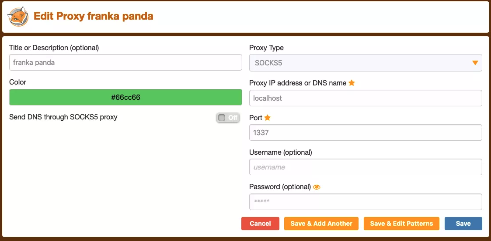

Prerequisites
Contents
Prerequisites¶
Simulation environments only¶
For simulation, we simply assume a Conda environment with Python 3.8, running on a Linux machine. You may then proceed to installation.
Franka Panda hardware setup¶
To control real-time-capable hardware (such as the Franka Panda), we highly recommend running the server on a separate machine (e.g. a NUC) with a real-time kernel which is directly connected to the robot. Your client code should then connect to the server over network and execute any heavy computation (e.g. image processing, planning, GPU usage) to avoid interrupting the real-time control loop on the NUC.
Setting up the Franka Panda¶
Robot stand.
A pricier but nice solution is this custom-designed stand.
Networking
Connect NUC to Control using Ethernet
Set the “Wired” network settings on the NUC for control: Manual IPv4 with Address
172.16.0.1, Netmask255.255.255.0Put GPU-enabled workstation on the same network (could be wireless, since no real-time guarantees for user code).
Optional: You can use FoxyProxy to access Franka Desk from your user machine.
In your
~/.ssh/config, find the entry you use tosshinto your NUC. AddDynamicForward 1337to that entry and use that portAdd this to your FoxyProxy settings: 
Robot firmware upgrade through Franka World. See Franzi’s Facebook-internal note for details
Setting up the NUC¶
The following guide is written with specific, known-good version numbers to get you up and running as quickly as possible; other versions will also likely work.
Install Ubuntu 20.04 or Ubuntu 18.04.5
The Franka documentation has a comprehensive guide on installing real-time kernel. Here is a condensed version2:
Install prereqs:
sudo apt install build-essential bc curl ca-certificates gnupg2 libssl-dev lsb-release libelf-dev bison flex
Download known-good kernel and patch (Ubuntu 20)
curl -SLO https://mirrors.edge.kernel.org/pub/linux/kernel/v5.x/linux-5.11.tar.xz curl -SLO https://mirrors.edge.kernel.org/pub/linux/kernel/projects/rt/5.11/older/patch-5.11-rt7.patch.xz xz -d linux-5.11.tar.xz xz -d patch-5.11-rt7.patch.xz
Ubuntu 18 links (update version numbers for future commands)
curl -SLO https://mirrors.edge.kernel.org/pub/linux/kernel/v5.x/linux-5.4.70.tar.xz curl -SLO https://mirrors.edge.kernel.org/pub/linux/kernel/projects/rt/5.4/older/patch-5.4.70-rt40.patch.xz xz -d linux-5.4.70.tar.xz xz -d patch-5.4.70-rt40.patch.xz
Extract the kernel and apply the patch:
tar xf linux-5.11.tar cd linux-5.11 patch -p1 < ../patch-5.11-rt7.patch
Configure the kernel:
make oldconfig
Choose
Fully Preemptible Kernelwhen asked for Preemption Model, and leave the rest to defaults (keep pressingEnter).Set the following values in the
.configfile:CONFIG_SYSTEM_TRUSTED_KEYS = ""CONFIG_MODULE_SIG_KEY="certs/signing_key.pem"CONFIG_SYSTEM_TRUSTED_KEYRING=y
Compile the kernel:
sudo make -j4 deb-pkgThis takes a long time, so set
-jto use more cores.If you get
kernel signature invaliderror, disable secure boot in your BIOS.
Install the kernel:
sudo dpkg -i ../linux-headers-5.11.0-rt7_*.deb ../linux-image-5.11.0-rt7_*.deb
Follow the rest of the instructions in Franka’s guide to verify the kernel and allow a user to set real-time permissions.
You are now ready to install Polymetis.